Big Data e Ingeniería de Datos
Clase 1 · ¿La lluvia cambia los viajes en NYC?
Posgrado · UdeM · 3 nov 2026
Este curso trata de construir los sistemas que mueven y preparan datos, no solo de consultarlos. Todo lo de hoy cuelga de una sola pregunta, que se vuelve a contestar al final con una consulta en vivo. Cada bloque responde qué hace falta para contestarla con rigor. Hoy no hay laboratorio de SQL (es la clase 2); hoy se fijan los conceptos, se justifica la arquitectura y se crean las cuentas que la habilitan.
En 8 sesiones construyes un sistema de datos de punta a punta sobre los viajes de NYC
– Warehouse, lake, lakehouse, medallion
– SQL en Snowflake, Spark en Glue, Airflow
– Git, CI/CD, infraestructura como código, calidad y costos
El curso no es de una herramienta: es de cómo se diseña y opera un sistema que lleva el dato del origen a la decisión. Las herramientas son las que usa la industria hoy, pero lo que se evalúa es el criterio para elegirlas.
Las 8 sesiones van de la arquitectura al pipeline en producción
Ingeniería de datos y arquitectura
Cómo se lee big data · SQL en Snowflake
SQL avanzado y modelado dimensional
Del lake a Snowflake · lanza Taller 1
Airflow y Glue hacia Snowflake · lanza Taller 2
Rendimiento, costos, calidad y producción
Trabajo de Taller 2 y cierre
Las sesiones 1 a 4 trabajan sobre Snowflake mientras AWS se termina de habilitar; desde la 5 el pipeline corre en la nube. Cada sesión deja una pieza de la arquitectura funcionando.
La nota sale de dos talleres en equipos de máximo 4 personas
– Modelo estrella y preguntas de negocio en SQL
– Viajes reales de NYC en Snowflake
– Lanza 10 nov · entrega 15 nov
– Pipeline Spark, Glue y Airflow → Snowflake
– Con pruebas, CI y costos
– Lanza 18 nov · entrega 29 nov
Cada taller tiene un núcleo obligatorio y retos opcionales para quien quiera ir más lejos. En clase se trabaja individualmente; los equipos son solo para los talleres y se forman en la sesión 4.
EL CASO QUE ATRAVIESA EL CURSO
¿La lluvia cambia los viajes en NYC?
La TLC (Comisión de Taxis y Limusinas de NYC, el regulador) decide política de movilidad
Formula la hipótesis en términos medibles: viajes por día cuando la precipitación supera un umbral, frente a días secos. Deja unos segundos de silencio para que cada persona fije su intuición; no se registra nada, la respuesta se contrasta al final. Las 239.5 M de filas son los viajes FHVHV de 2024. La pregunta no es el objetivo de la clase: es el criterio con el que se evalúa cada decisión de arquitectura. La TLC es el regulador de taxis y plataformas de NYC y quien decide política de movilidad con estos números. Los 239.5 M de viajes y las 3 fuentes se presentan en la siguiente slide.
Responder exige cruzar tres fuentes sin formato, grano ni cadencia comunes
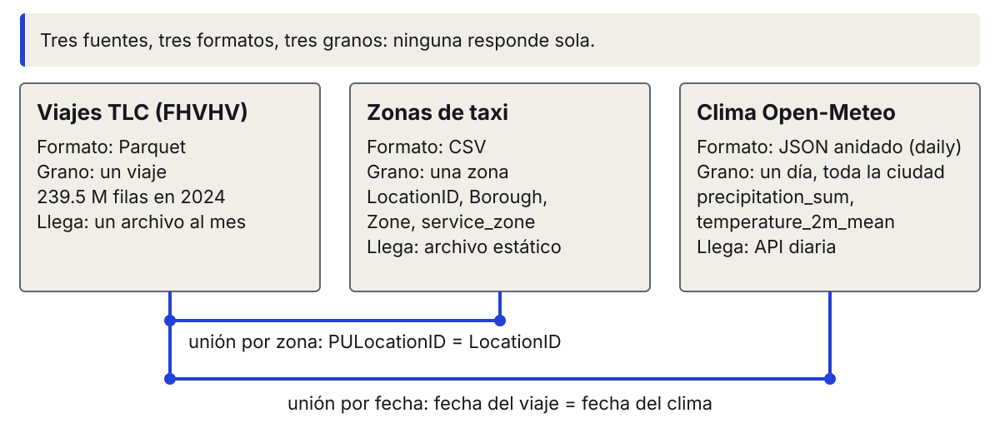
Grano = qué representa una fila · TLC = Comisión de Taxis y Limusinas · FHVHV = viajes de plataformas como Uber y Lyft
Los viajes llegan en Parquet, una fila por viaje y un archivo al mes; las zonas, en un CSV estático; el clima, en JSON anidado con una lectura por día. Hay dos uniones: PULocationID contra LocationID, y la fecha del viaje contra la fecha del clima. El clima es un solo punto de Nueva York (40.71, −74.01): un valor diario para toda la ciudad. Esa limitación acota lo que se podrá concluir al final.
Excel admite 1 048 576 filas: el año son ~228 hojas. 5.4 GB caben en un portátil: lo difícil son 3 fuentes, la repetición mensual y la confiabilidad.
Doce archivos mensuales de ~450 MB suman 5.4 GB; enero tiene 19.7 M de filas y el año 239.5 M. El volumen cabe en un disco: lo que vuelve esto un problema de ingeniería es repetir el proceso cada mes con el mismo resultado, cruzar tres fuentes y poder explicar de dónde sale cada número. Si el volumen fuera 100 veces mayor cambiaría el cómputo, no el diseño por capas.
Cada pieza del curso cumple un requisito de la pregunta
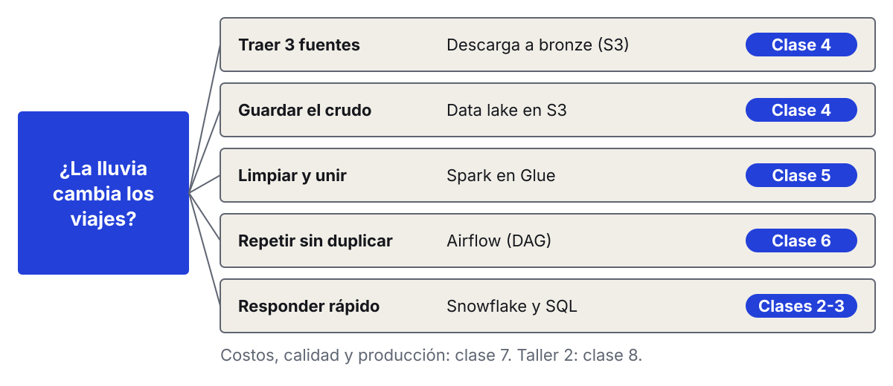
S3 = almacenamiento de archivos · Spark = motor de procesamiento distribuido · Glue = Spark administrado por AWS · Airflow = orquestador · Snowflake = warehouse en la nube
Lee el diagrama de izquierda a derecha: cada requisito (traer, guardar, transformar, repetir, responder) tiene una pieza y una clase donde se construye. Snowflake y SQL ocupan las clases 2 y 3; el lake y la carga a Snowflake, la 4 (con el Taller 1); Spark y Glue, la 5; Airflow, la 6; costos, calidad y producción, la 7; el Taller 2 cierra en la 8. Volveremos a este mapa al final con la pregunta contestada.
¿Qué sistema lleva el viaje que registra la app hasta la decisión de la TLC, el regulador?
Entre el INSERT de un viaje en la app y una cifra en un informe hay almacenamiento, transformación, validación y orden de ejecución. Ese tramo es el objeto de la ingeniería de datos. Los siguientes 30 minutos lo descomponen en etapas, roles y mecanismos.
La ingeniería de datos diseña y opera los sistemas que llevan el dato del origen al uso
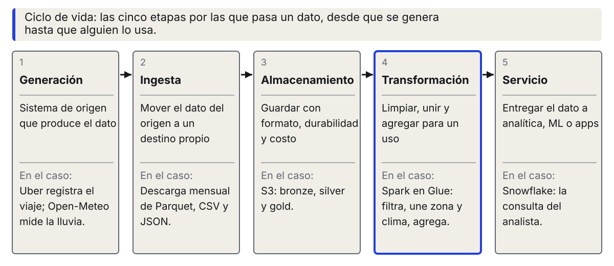
Transversales: seguridad, gestión de datos, DataOps, arquitectura, orquestación, software.
Ciclo de vida: generación, ingesta, almacenamiento, transformación y servicio; en la literatura el almacenamiento sostiene a las demás etapas (Reis y Housley, cap. 2). Cada etapa tiene aquí un ejemplo del caso: la app de Uber genera el viaje, la descarga mensual lo ingiere, S3 lo almacena, Spark lo transforma, Snowflake lo sirve. Las corrientes transversales (seguridad, gestión de datos, DataOps, arquitectura, orquestación, ingeniería de software) no son una etapa: se aplican a todas. Pregunta de control: ¿en qué etapa se decide que un viaje de 0 millas no cuenta? (transformación).
Tres roles, un mismo dato, tres preguntas distintas
¿Llega completo y reproducible?
Pipeline que produce la tabla diaria
Ingeniería de datos queda aguas arriba: si falla, el analista y el científico producen números incorrectos con total consistencia. El analista formula y lee agregados; la ciencia de datos construye modelos con el dato ya preparado. En un equipo pequeño una persona cubre varios roles, pero la responsabilidad de cada uno es distinta. Hoy el curso se mueve en el primer rol; la consulta final la hará el analista.
Un pipeline encadena pasos con entrada y salida definidas hasta producir un conjunto de datos consumible
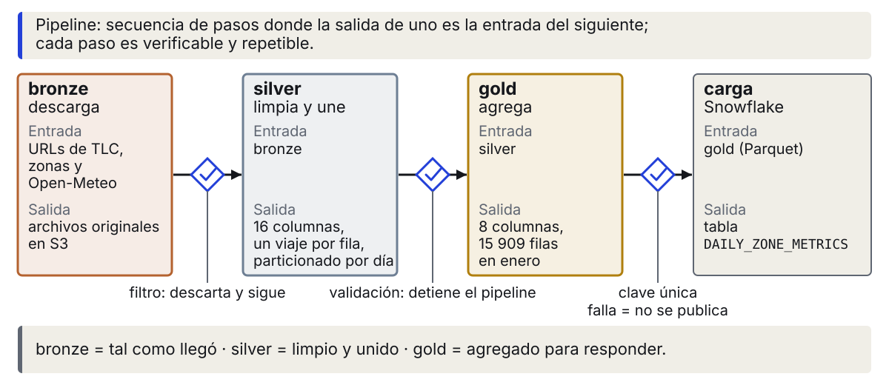
El filtro descarta filas; la validación y la clave única detienen el pipeline y no se publica
El pipeline del curso tiene cuatro pasos: bronze descarga, silver limpia y une, gold agrega, y la carga lleva gold a Snowflake. Cada paso lee la salida del anterior, no de la fuente. Las validaciones son código: silver falla con QualityError si hay llaves nulas o valores fuera de rango, y gold exige clave única (fecha, zona, empresa). Preferir detenerse a publicar un dato dudoso es una decisión de diseño.
ETL transforma antes de cargar; ELT carga el crudo y transforma después
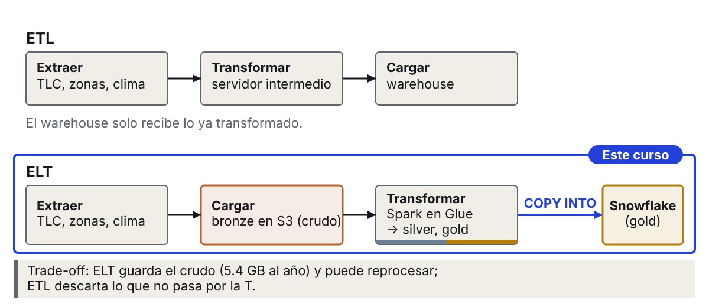
El curso hace ELT sobre el lake y carga a Snowflake solo gold, ya transformado.
En ETL la transformación ocurre en un servidor intermedio y el destino solo recibe el resultado: lo que no pasó por la T el destino no lo conserva. En ELT el crudo se carga primero y se transforma con el motor del destino. El curso es ELT sobre el lake: bronze guarda lo descargado, Spark en Glue produce silver y gold, y a Snowflake solo llega gold. El costo es almacenar el crudo; el beneficio, cambiar una regla y reprocesar.
Este caso es batch: los datos llegan en archivos mensuales y la pregunta es histórica
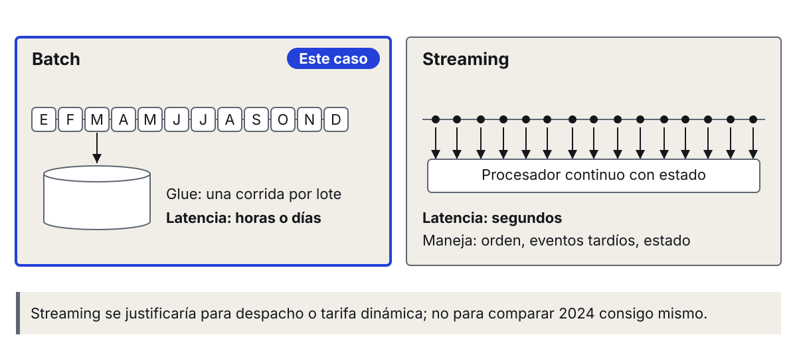
Streaming procesa evento a evento, con latencia de segundos y más complejidad.
Batch procesa lotes acotados cuando termina de llegar el dato; streaming procesa eventos no acotados de forma continua y debe manejar estado, orden y eventos tardíos (Kleppmann, caps. 10-11). TLC publica un Parquet por mes y la pregunta compara 2024 consigo mismo: una latencia de horas no cambia la decisión. Streaming sí se justificaría para despacho o tarifa dinámica, donde la decisión pierde valor en segundos. Criterio: la latencia que exige la decisión, no la que permite la tecnología.
Un orquestador ejecuta el pipeline como un DAG: dependencias explícitas, estado por tarea y reproceso por mes
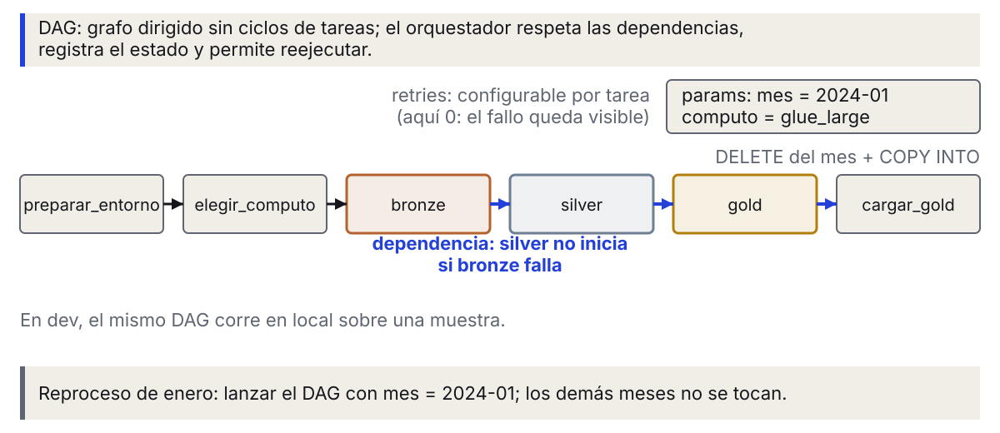
Airflow define cada paso como tarea y su orden; el cómputo lo hace Glue.
DAG es un grafo dirigido sin ciclos: cada tarea declara de cuál depende y el orquestador no lanza silver si bronze no terminó bien. El DAG real se llama pipeline_taxi y recibe dos parámetros: mes (vacío = todos) y computo (spark_local o un perfil de Glue). Los reintentos (retries) se configuran por tarea; el DAG actual usa el valor por defecto (0), de modo que un fallo queda visible y se relanza a mano; se discute en la clase 7. Reprocesar enero es lanzar el DAG con mes = 2024-01.
Un paso idempotente deja el mismo resultado si se ejecuta una o diez veces
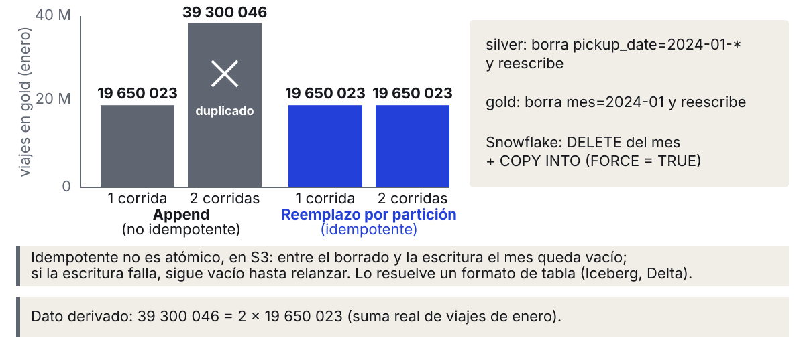
Idempotencia es la propiedad que permite reintentar sin miedo: un fallo a medias no exige limpieza manual. Si gold cargara con append, ejecutar dos veces enero daría 39 300 046 viajes en vez de 19 650 023 (2 × la cifra real, aritmética derivada). El curso la logra borrando antes de escribir: silver borra las particiones pickup_date del mes, gold borra mes=YYYY-MM y Snowflake hace DELETE del mes más COPY INTO con FORCE = TRUE. FORCE se necesita porque Snowflake recuerda 64 días los archivos ya cargados.
PARADA: GITHUB Y SNOWFLAKE
¿Dónde vive el código del pipeline y dónde se servirá gold?
Parada de trabajo individual: las cuentas son piezas de la arquitectura, no trámites. GitHub guarda el código y ejecuta el despliegue; Snowflake será el destino de gold. El instructor recorre los puestos; la guía completa y la tabla de errores comunes están en cuentas.md.
Tu fork versiona el pipeline; Actions lo despliega
Crea la cuenta: github.com > Sign up.
Abre github.com/Diegomanzur10/bigdata-udem-2026.
Fork > Create fork: tu copia es TU-USUARIO/bigdata-udem-2026.
Actions > "I understand my workflows…" > enable.
Debes ver: Actions con workflows habilitados.
Guía: curso/clase01/cuentas.md
Habilita: el código del pipeline, el CI y el despliegue (GitHub Actions) viven en tu fork; ahí están los workflows deploy.yml y ci.yml. Sin el último botón de Actions los workflows de tu fork no corren; es el error más frecuente. El fork da una copia propia sin afectar el repositorio del curso. Quien termine antes avanza con Snowflake (slide 19); no hay actividad adicional.
El trial de Snowflake es donde se servirá gold
signup.snowflake.com: crea el trial.
AWS, US East (Ohio), Enterprise.
Activa por correo; guarda usuario y URL.
Projects > Worksheets > + SQL Worksheet.
Ejecuta SELECT CURRENT_REGION();
Debes ver AWS_US_EAST_2; si no, repítelo.
Habilita: el warehouse que recibirá gold con COPY INTO desde S3. La región coincide con la del lake (us-east-2) para que el tráfico entre ambos quede dentro de la misma región. Quien no vea AWS_US_EAST_2 creó la cuenta en otra nube o región y debe repetirlo con otro correo. El trial creado hoy vence el 3 dic, nueve días después de la clase 8.
¿Dónde se consulta rápido lo que ya sabemos que queremos preguntar?
Primer candidato de almacenamiento para el caso. Se evalúa con la misma vara en toda la clase: qué resuelve de la pregunta de lluvia y qué deja fuera.
Un data warehouse integra varias fuentes en un almacén histórico optimizado para análisis
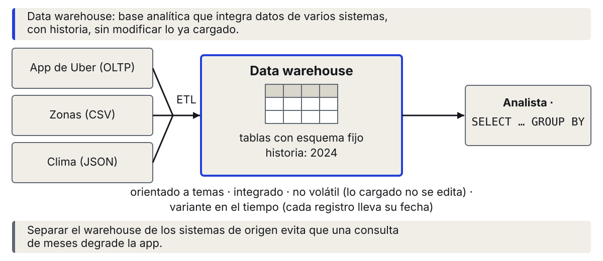
Esquema definido y SQL: el analista consulta sin tocar los sistemas de origen.
La definición clásica pide cuatro propiedades: orientado a temas, integrado, no volátil y variante en el tiempo (Inmon). «No volátil» quiere decir que el dato cargado no se actualiza en sitio: se agregan nuevas cargas. «Variante en el tiempo» quiere decir que cada registro lleva su fecha, así que la historia se conserva. Separar el warehouse de los sistemas de origen evita que una consulta de meses degrade la app que registra viajes. El precio es mover el dato (carga) y mantener su esquema.
Uber registra un viaje (OLTP); el regulador agrega meses (OLAP)
OLTP (procesamiento transaccional) sirve a la app: miles de escrituras concurrentes que tocan una fila por clave y exigen ACID. OLAP (procesamiento analítico) sirve al regulador: pocas consultas que recorren millones de filas y leen pocas columnas. Enero completo tiene 19.7 M de filas : sumar por zona sobre una base OLTP compite con el INSERT de viajes. Son cargas con cuellos de botella opuestos, por eso se separan los sistemas (Kleppmann, cap. 3).
Esquema al escribir: el warehouse valida tipos y estructura antes de guardar, y rechaza lo que no encaja
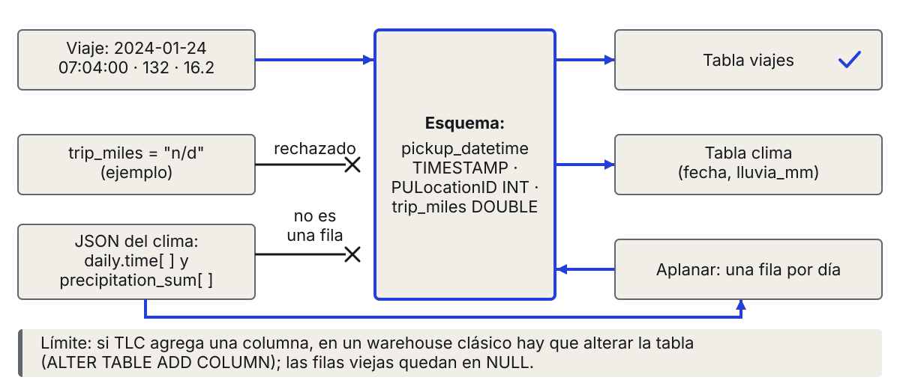
Consultas predecibles; a cambio, una columna nueva en la fuente exige migrar la tabla.
Schema-on-write: la tabla declara tipos y restricciones, y la carga falla o transforma lo que no cumple. Garantiza que toda lectura posterior encuentra el tipo esperado. Un viaje con pickup_datetime válido pasa; un texto en trip_miles se rechaza; el JSON del clima, con arreglos dentro de un bloque daily, no tiene forma de fila y debe aplanarse antes de cargar. Si TLC agrega una columna, en un warehouse clásico se resuelve con ALTER TABLE ADD COLUMN; las filas viejas quedan en NULL.
Un almacén columnar lee solo las columnas que la consulta usa y comprime cada columna por separado
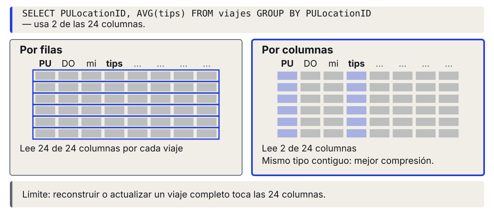
El esquema de viajes FHVHV tiene 24 columnas; promediar propina por zona de recogida usa 2. En disco por filas hay que leer los 24 valores de cada viaje; por columnas se leen solo los bloques de las dos. Además, valores del mismo tipo y rango contiguos se comprimen mejor, y los bloques traen estadísticas (mínimo y máximo) que permiten saltarse los que no aplican. Es la propiedad que explica por qué OLAP es rápido (Kleppmann, cap. 3); Parquet aplica la misma idea en archivos.
El modelo estrella separa el hecho (el viaje) de las dimensiones que lo describen
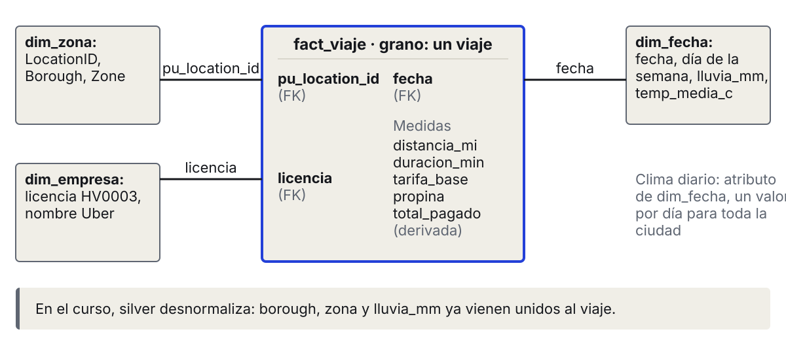
Grano: una fila de hechos = un viaje. Las medidas se suman; las dimensiones agrupan.
Una tabla de hechos guarda eventos medibles (aquí, el viaje con distancia, duración, tarifa, propina) y claves hacia dimensiones que dan contexto: zona, fecha con su clima, empresa (Kimball y Ross). Las medidas se suman o promedian; los atributos de las dimensiones filtran y agrupan. El curso materializa la unión en silver (borough, zona y lluvia_mm ya vienen pegados al viaje) y agrega en gold; el modelo estrella es el razonamiento detrás de esas columnas. Gold es también una tabla de hechos, pero agregada: su grano es fecha × zona × empresa y sus medidas resumen silver. total_pagado se marca como derivada: es una medida calculada, no un campo de origen.
El grano fija qué pregunta responde una tabla
¿Viajes de Uber en JFK por día?
El grano se declara primero: dice qué representa una fila y condiciona todo lo demás (Kimball y Ross). Gold tiene grano fecha × zona × empresa: 15 909 filas y 19 650 023 viajes en enero. Sumar viajes sobre ese grano es válido; promediar propina_promedio entre filas no lo es, porque un promedio de promedios exige ponderar por el número de viajes de cada fila. Mezclar granos en una misma tabla es la causa más común de dobles conteos.
Guardar todo el crudo en un warehouse obliga a modelar antes de saber qué columnas servirán
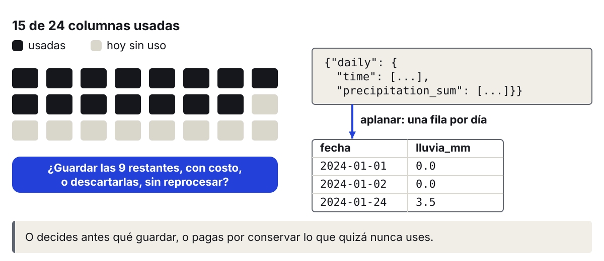
Snowflake admite JSON (VARIANT), pero el crudo queda en el formato y el motor del proveedor.
Primer límite: el warehouse exige un esquema ya decidido. De las 24 columnas de FHVHV el pipeline usa 15; las otras 9 (por ejemplo, request_datetime y los flags de viaje compartido) hoy no sirven, pero podrían servir mañana. Si no se guardan, no se pueden reprocesar; si se guardan, se paga su almacenamiento y se modelan. El JSON del clima añade el problema de la estructura anidada: hay que aplanar el bloque daily a una fila por día.
En un warehouse clásico, cómputo y almacenamiento crecen juntos: más datos obligan a pagar más cómputo
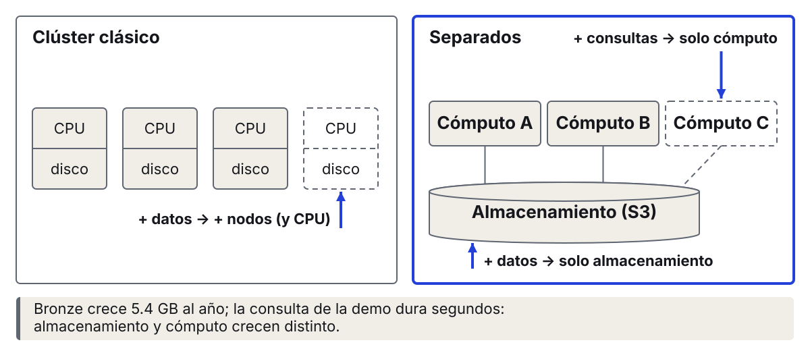
Los motores en la nube separan ambos; la clase 2 muestra cómo lo hace Snowflake.
Segundo límite: en un clúster clásico cada nodo trae CPU y disco, de modo que crecer en datos obliga a comprar nodos con CPU que quizá no se use, y una consulta pesada compite con las demás por los mismos recursos. Bronze crece 5.4 GB al año; la demo final necesita una consulta corta: son dimensiones distintas. Separar almacenamiento y cómputo permite escalarlos y pagarlos por separado. No se explica Snowflake aquí; se retoma en la clase 2.
El warehouse resuelve la consulta; el lake resuelve guardar y reprocesar el crudo
– Consultas rápidas con SQL sobre datos modelados
– Esquema validado al escribir
– Guardar los 3 orígenes tal como llegan, en archivos abiertos
– Reprocesar meses cuando cambia una regla
– Leer el JSON del clima sin modelarlo antes
Balance del bloque contra el caso. Un warehouse con gold (15 909 filas al mes) contesta la consulta de lluvia sin dificultad. Lo que no cubre bien es lo anterior a gold: conservar los tres orígenes fuera de su motor y su esquema, rehacer silver cuando cambia una regla y alojar formatos que no son tablas. Esa necesidad es la que describe el siguiente bloque. Pregunta de control: ¿qué decisión se pierde si solo existe la tabla de gold? (el viaje individual y la regla con que se limpió).
Si el warehouse pide decidir el esquema antes, ¿dónde guardamos el crudo tal como llegó?
Slide fija durante el descanso. Quien quiera, avanza sus cuentas de GitHub y Snowflake. La pregunta enlaza con el bloque siguiente: guardar primero, decidir el esquema después.
¿Dónde vivirán bronze, silver y gold, y quién ejecutará el pipeline?
AWS aloja las tres capas (S3), el cómputo (Glue) y el orquestador (Airflow en una VM). Hoy solo se crea y se asegura la cuenta; la verificación puede tardar hasta 2 días y las cuotas se piden en la clase 2 o cuando llegue el correo. Quien no pueda completar el registro hoy no pierde contenido.
Tu cuenta de AWS aloja S3 (lake), Glue (cómputo) y Airflow (orquestación)
Abre el registro advanced: signin.aws.amazon.com/signup?request_type=register
Correo, contraseña y tarjeta: AWS la pide para verificar identidad.
Verificación por teléfono.
Espera el correo de confirmación; puede tardar hasta 2 días.
Usa el registro advanced y no el de tipo project. La tarjeta es de verificación; el curso usa el plan gratuito y enseña a apagar todo, y hay topes de gasto en la infraestructura. Si la tarjeta o el teléfono fallan, se reintenta en la clase 2. Tiempo de trabajo individual: el instructor atiende puesto por puesto.
MFA en root y la región us-east-2 protegen la cuenta y ubican los datos
Activa MFA (segundo factor) en root (dueño de la cuenta).
Elige US East (Ohio), us-east-2: ubicación de los datos.
Debes ver: cuenta, MFA y región.
Si falla: curso/clase01/cuentas.md.
Root es el usuario dueño de la cuenta; MFA es un segundo factor (app autenticadora) que protege esa identidad. La región es donde viven todos los recursos; el lake, Glue y Snowflake quedan en us-east-2 para no cruzar regiones. Si AWS dice que la cuenta está en verificación, no se intenta CloudShell todavía.
AWS se habilita por tramos hasta el 17 de noviembre
Clase 2: cuotas y bootstrap (plantilla que crea los permisos base)
Clase 3: entorno de trabajo y conexión con Snowflake
Clase 4: lake, Glue y datos de muestra
Semáforo: rojo verifica · amarillo cuotas · verde claro bootstrap · verde listo
El semáforo se reporta en el formulario del cierre y el instructor lo actualiza cada clase. Rojo: cuenta creada pero en verificación. Amarillo: cuenta verificada con cuotas pedidas o pendientes. Verde claro: cuotas aprobadas y bootstrap hecho. Verde: pasos 5 a 12 completos. La clase 5 (17 nov) es la primera que necesita AWS (Code Editor). Meta: el 10 nov la mayoría en verde y cada equipo con al menos una persona en verde, que será el anfitrión del Taller 2. Cuotas y bootstrap en la clase 2, pasos 5 a 9 en la 3, pasos 10 a 12 en la 4. Si tu cuenta ya está verificada, pide las cuotas apenas puedas (5 min). Quien no tenga AWS disponible no pierde contenido.
¿Cómo guardamos los tres orígenes tal como llegan, sin imponer un esquema todavía?
Segundo candidato: guardar primero, decidir el esquema después. Se mantiene la misma vara: qué resuelve del caso y qué riesgo introduce.
Un data lake guarda archivos como objetos en almacenamiento como S3, sin imponer un esquema al escribir
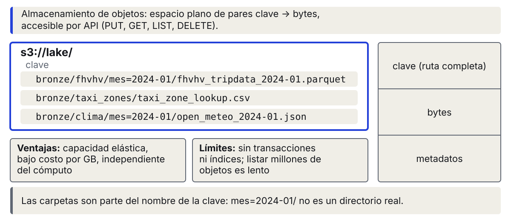
Un objeto se reemplaza completo, no se edita; no hay transacciones ni índices.
Almacenamiento de objetos: un espacio plano de pares clave-bytes con API de PUT, GET, LIST y DELETE. Las «carpetas» son prefijos dentro de la clave. El lake del curso es un bucket con bronze/fhvhv/mes=YYYY-MM/, bronze/taxi_zones/ y bronze/clima/mes=YYYY-MM/. Ventajas: capacidad elástica, bajo costo por GB, independiente del cómputo. Límites: listar millones de objetos es lento y no se actualiza una fila.
El formato decide cuánto se lee: Parquet, solo lo pedido; CSV y JSON, todo
– Texto por fila
– Sin tipos
– Se lee y parsea todo el archivo
– Texto anidado; el esquema se descubre al leer
– Se lee y parsea todo el archivo
– Binario columnar
– Con esquema
– Lee solo las columnas pedidas y salta bloques con min/max
CSV: texto por fila; el encabezado da nombres, no tipos; hay que leerlo entero. JSON: texto anidado y autodescriptivo; el esquema no está declarado, se descubre al leer. Parquet: formato binario columnar que guarda el esquema y estadísticas por bloque en el propio archivo, comprime por columna y permite leer solo lo pedido (especificación Apache Parquet). El archivo mensual de viajes pesa ~450 MB en Parquet. Cada fuente llegó en el formato que eligió su productor; el lake los acepta todos.
Particionar por fecha permite leer solo las carpetas que la consulta necesita
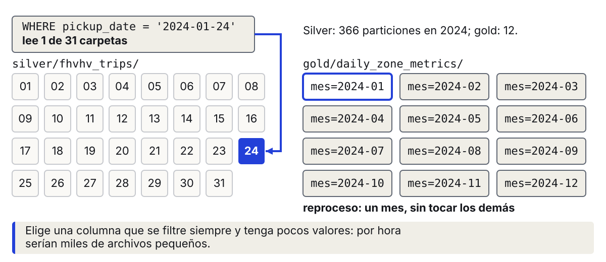
Límite: demasiadas particiones pequeñas encarecen listar y abrir archivos.
Particionar es organizar los archivos por el valor de una columna que se filtra casi siempre. Silver se particiona por pickup_date (una carpeta por día; 366 en 2024) y gold por mes (12), lo que además permite reprocesar un mes sin tocar los demás. Una consulta de un día lee 1 de 31 carpetas de enero. Una partición por hora o por zona daría miles de archivos diminutos: elegir la columna es una decisión de diseño.
Esquema al leer: el archivo se guarda tal cual y cada consulta le impone su estructura
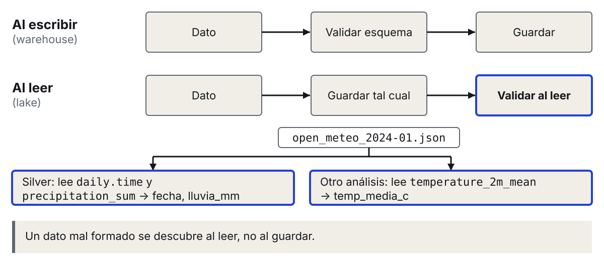
Parquet trae su esquema; el esquema al leer pesa sobre todo en CSV y JSON.
Schema-on-read invierte el orden del warehouse: primero se guarda, después cada lector declara la estructura que necesita. El mismo JSON del clima lo lee silver para obtener fecha y lluvia_mm y podría leerlo otro análisis solo para la temperatura. Un campo mal formado no se rechaza al guardar: rompe cuando alguien lo lee. Por eso el curso valida al pasar a silver.
Sin catálogo ni gobierno, un lake se degrada en un pantano de datos que nadie sabe interpretar
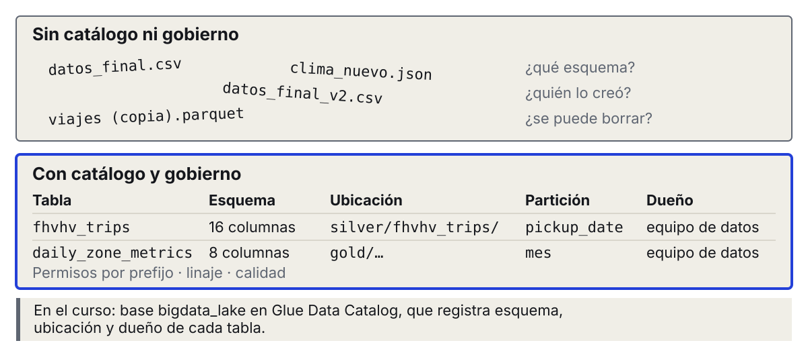
Catálogo: tabla, esquema, ubicación y partición registrados; en el curso, Glue Data Catalog.
Data swamp: archivos sin esquema documentado, sin dueño, sin linaje ni calidad conocida; nadie se atreve a usarlos ni a borrarlos. La defensa es un catálogo (qué tabla, qué esquema, dónde, qué partición) más gobierno (permisos, dueños, linaje, calidad). El Terraform del curso crea una base en el Glue Data Catalog.
Un formato de tabla abierto agrega transacciones ACID y versiones sobre archivos Parquet en el lake
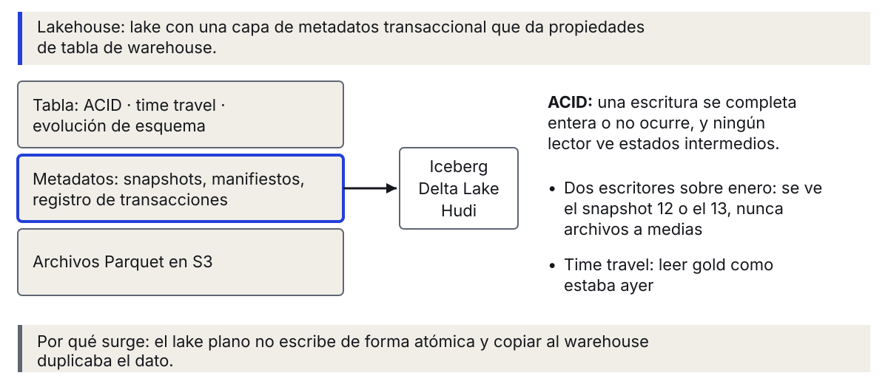
Iceberg, Delta Lake y Hudi. Costo: mantenimiento de metadatos y compactación.
El lake plano no ofrece escrituras atómicas ni actualizaciones, y copiar todo a un warehouse duplicaba datos y los desincronizaba; de ahí el lakehouse (Armbrust et al., CIDR 2021). Iceberg, Delta Lake y Hudi añaden una capa de metadatos (snapshots y manifiestos en Iceberg; registro de transacciones en Delta) que confirma cada escritura de forma atómica y permite leer versiones anteriores (time travel). Con eso dos jobs que escriben enero no dejan archivos a medias. Costo: compactar archivos pequeños y expirar snapshots.
¿Cómo organizamos el lake para que cada paso se verifique y se pueda repetir?
El riesgo del lake es el pantano. Medallion lo evita con capas que prometen cosas distintas. Después se justifica la arquitectura completa del curso.
Medallion divide el lake en tres capas; cada una promete un contrato verificable
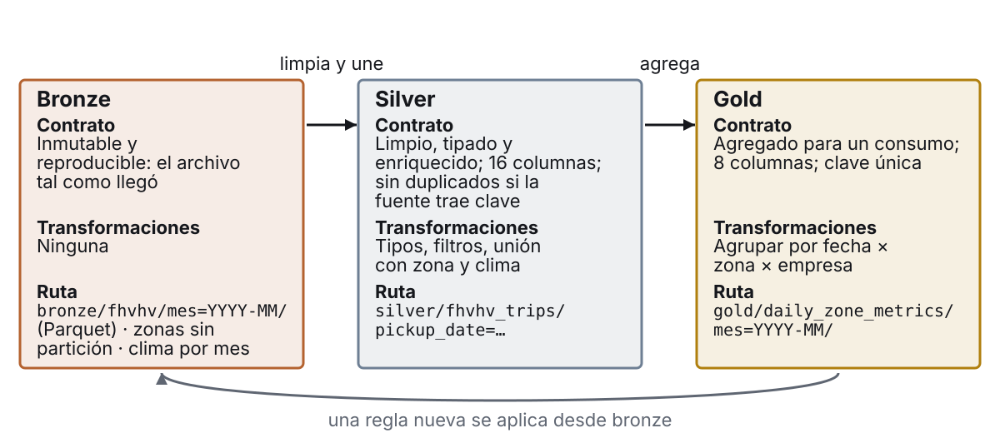
Las capas no se saltan: gold se calcula desde silver, silver desde bronze.
Única analogía del deck: en contabilidad, el asiento original no se modifica (bronze), el libro mayor lo ordena y clasifica (silver) y el estado financiero resume para un lector (gold); si cambia un criterio, se vuelve a derivar desde los asientos. Contrato de bronze: inmutable y reproducible. Silver: limpio, tipado y enriquecido; la deduplicación es parte del contrato general, pero FHVHV no trae identificador de viaje y este pipeline no deduplica; la unicidad se valida en gold. Gold: agregado para un consumo.
Una fila de bronze llega tal como la entregó la fuente
bronze · ejemplo con el esquema real
Es un ejemplo con el esquema real de FHVHV; los valores se eligieron para coincidir con la fila gold real de la slide 46. El código de licencia HV0005 no es un nombre, la zona es un número y el tiempo está en segundos: nada de eso es utilizable aún. Bronze lo conserva así a propósito, porque lo que parece ruido hoy puede ser la regla que se cambie mañana. Pregunta de control: ¿qué falta para saber en qué zona fue la recogida? (la fuente de zonas).
En silver el mismo viaje tiene tipos, empresa, zona y lluvia
silver · ejemplo con el esquema real
Las transformaciones, todas de silver.py: licencia a nombre de empresa (diccionario del TLC), segundos a minutos, nulo a cero en propina, pickup_date como clave de partición, unión por PULocationID con el CSV de zonas y unión por fecha con el clima. Es una fila de ejemplo: silver tiene 16 columnas. Los joins son left: un viaje sin zona conocida se queda con «Zona <id>» y no se pierde. Propina nula pasa a 0.0 (coalesce en silver.py) para que total_pagado, que suma los cargos más la propina, no se vuelva nulo por un solo valor faltante y para poder promediar propina; supone que nulo significa sin propina.
En gold, los 1 965 viajes de Lyft en JFK ese día son una sola fila
conteo de viajes del grupo
Esta fila es real. El viaje individual ya no existe: se perdió a cambio de poder responder en segundos. Gold tiene 8 columnas (todas en la tabla) y grano fecha × zona × empresa; el mes completo son 15 909 filas. El día 24 llovió 3.5 mm: lluvia_mm se repite en todas las filas de ese día porque el clima es uno por día. Rótulo de la fuente: gold.daily_zone_metrics · fila real de Snowflake.
Silver filtra viajes y valida; si la validación falla, se detiene
SELECT hvfhs_license_num, pickup_datetime, PULocationID,
trip_miles, trip_time / 60 AS duracion_min
FROM bronze.fhvhv_trips
WHERE pickup_datetime IS NOT NULL
AND PULocationID IS NOT NULL
AND trip_miles > 0 AND trip_miles < 100
AND base_passenger_fare > 0
AND trip_time / 60 BETWEEN 1 AND 180;
Equivalente SQL de limpiar_viajes: un viaje de 0 millas se descarta aquí. Validación: si tras filtrar quedan 0 filas o hay claves duplicadas en gold, quality.py lanza QualityError y el pipeline se detiene.
El código real es Spark (limpiar_viajes); el SQL es su equivalente. Después de limpiar, quality.validar comprueba llaves no nulas y rangos, y lanza QualityError si algo falla. Hay que contar las filas descartadas por cada filtro: sin ese conteo no se ve cuántos viajes se pierden. Dónde vive cada transformación: bronze ninguna, silver tipos, filtros y uniones, gold agrupar. Ubicar una regla en la capa equivocada rompe el contrato: un filtro en gold deja viajes basura en silver para otros consumidores.
Con bronze inmutable, cambiar una regla reescribe silver y gold sin descargar de nuevo
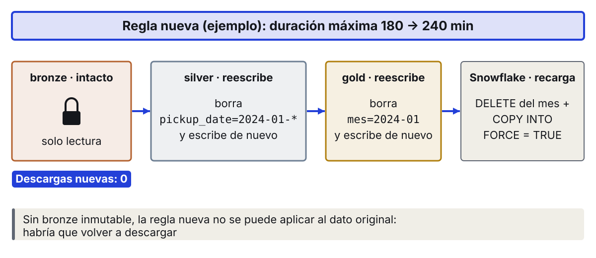
Reproceso por mes: se borra la partición del mes y se reescribe, también en Snowflake.
Ejemplo hipotético: si la duración máxima aceptada pasa de 180 a 240 minutos, se lanza el DAG con mes = 2024-01. Silver borra las particiones pickup_date=2024-01-* y las reescribe; gold borra mes=2024-01 y lo reescribe; Snowflake hace DELETE del mes y COPY INTO. Bronze no se toca ni se vuelve a descargar: si ya existe en S3, la tarea lo omite. Además: bronze omite el archivo si ya existe: las correcciones que TLC publique no entran; bronze inmutable = copia fechada de lo descargado. Eso es reproducibilidad: el mismo bronze y la misma regla dan el mismo gold.
La arquitectura del curso: lake en S3 con tres capas, Spark en Glue, Airflow y Snowflake como servicio
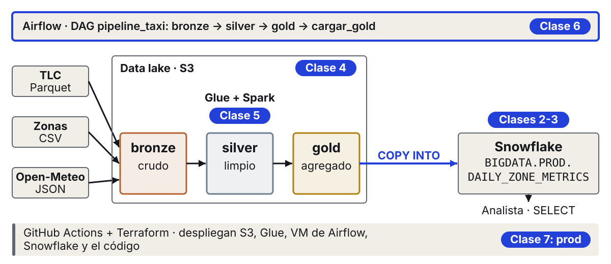
GitHub Actions y Terraform despliegan la infraestructura y el código.
Flujo real: tres fuentes se descargan a bronze en S3; Glue ejecuta Spark para producir silver y gold; Airflow lanza los pasos en orden; COPY INTO copia gold a Snowflake, donde el analista consulta. Cada pastilla indica la clase donde se construye la pieza. Es un lake con un warehouse al final: dos niveles de almacenamiento con papeles distintos. Requisitos y alternativas descartadas: S3 guarda el crudo para reprocesarlo (alternativa: todo en el warehouse, slides 27-28); Glue con Spark transforma 239.5 M de filas sin administrar un clúster (US$0.44 por DPU-hora, solo mientras corre); Airflow da orden, dependencias y reproceso por mes; Snowflake con COPY INTO sirve SQL al analista (SELECT lee la copia, no S3); GitHub Actions y Terraform reconstruyen la infraestructura igual cada vez. 5.4 GB caben en una sola máquina; Spark en Glue se elige para escalar sin cambiar el diseño y sin administrar servidores, no porque este volumen lo exija.
El curso es lake más warehouse, no lakehouse: así se ve dónde vive cada dato y qué cuesta
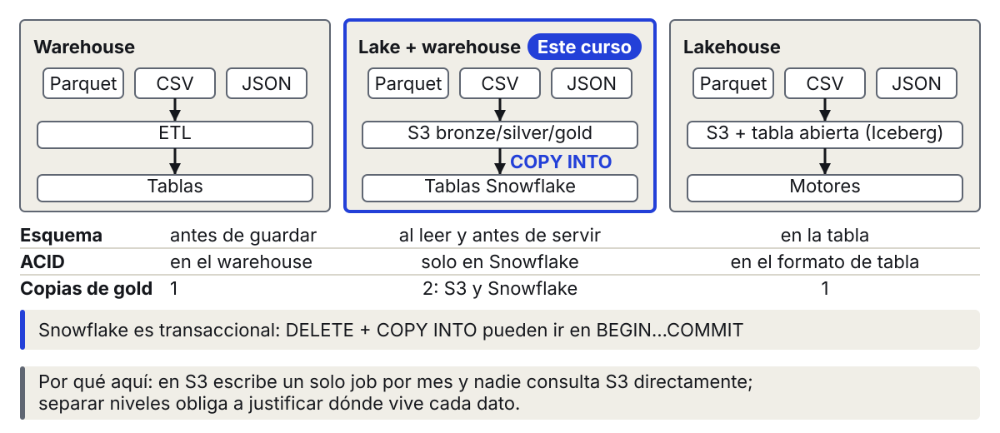
Alternativa descartada: Iceberg en S3 leído desde Snowflake.
Se usan dos niveles, S3 para el crudo y lo intermedio, y Snowflake para servir. Razón 1: en S3 escribe un solo job por mes y nadie consulta S3 directamente; el hueco entre DELETE y COPY se acepta o se envuelve en BEGIN…COMMIT. Razón 2: separar los niveles obliga a justificar dónde vive cada dato (resultado de aprendizaje 1). Costo de la decisión: gold existe en dos copias, S3 y Snowflake, y COPY INTO es el único puente. Un lakehouse con Iceberg sería la evolución natural; no se adopta aquí. Alternativas descartadas en el resto de la arquitectura: warehouse único (slides 27-28) y un clúster propio en lugar de Glue (slide 49).
¿La lluvia cambia los viajes en NYC?
Gold en Snowflake (BIGDATA.PROD) · una consulta · 15 909 filas
Cierra el círculo con la pregunta de la slide 5. El instructor corre la consulta; los estudiantes miran, la correrán ellos en la clase 4. Antes de ejecutar, pide la intuición del resultado y no la registres.
La consulta reduce gold a un valor diario y compara días secos con lluvia ≥ 1 mm
WITH dia AS (SELECT FECHA, MAX(LLUVIA_MM) AS LLUVIA_MM,
SUM(VIAJES) AS VIAJES
FROM BIGDATA.PROD.DAILY_ZONE_METRICS GROUP BY FECHA)
SELECT IFF(DAYOFWEEKISO(FECHA) >= 6,
'fin de semana', 'entre semana') AS SEMANA,
IFF(LLUVIA_MM >= 1, 'lluvia ≥ 1 mm', 'seco') AS TIPO_DIA,
COUNT(*) AS DIAS, ROUND(AVG(VIAJES)) AS VIAJES_PROM_DIA
FROM dia
WHERE LLUVIA_MM = 0 OR LLUVIA_MM >= 1 -- umbral 1 mm; llovizna fuera
GROUP BY 1, 2 ORDER BY 1, 2;
Un valor de clima por día para toda la ciudad, por eso MAX. Seco = 0 mm; lluvia = 1 mm o más.
La CTE colapsa a un valor por día porque el clima es uno por día; el filtro excluye la llovizna (0 < mm < 1) para comparar días claramente secos contra días claramente lluviosos. Ejecuta en vivo sobre BIGDATA.PROD con COMPUTE_WH.
En enero de 2024, la lluvia coincide con +9.7 % de viajes entre semana y −9.9 % en fin de semana
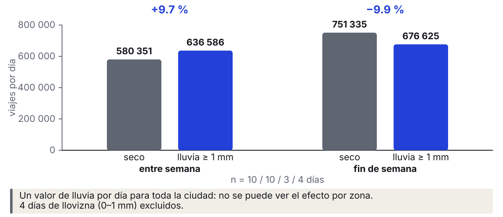
Enero 2024 (31 días) · correlación, no causa · seco = 0 mm · lluvia ≥ 1 mm
Entre semana: 580 351 viajes por día en días secos y 636 586 con lluvia (+9.7 %). En fin de semana: 751 335 secos y 676 625 con lluvia (−9.9 %). El signo cambia y cada grupo tiene entre 3 y 10 días; con 31 días no se separa lluvia de calendario. Confusores: el 1 de enero y el MLK Day (15 ene) son festivos que cambian el volumen de viajes sin relación con la lluvia; hay que tratarlos al pasar a 12 meses. Además el clima es un valor por día para toda la ciudad: no se puede ver el efecto por zona. La conclusión de ingeniería: la pregunta exige los 12 meses y otra granularidad de clima, y la arquitectura existe para producirlos de forma repetible.
filas leídas en gold, no los 19.7 M viajes del crudo (Query Profile, TableScan). Con 12 meses, el crudo son 239.5 M.
Snowsight · Query Profile
Abre el Query Profile de la consulta recién ejecutada y muestra el nodo TableScan con las filas leídas. Gold es el resultado de agregar: perdió el viaje individual y ganó que cada pregunta de este tipo lea miles de filas y no millones. Esa relación (19.7 M a 15 909) es el argumento económico del diseño por capas.
Con 12 meses la comparación gana rigor, pero sigue siendo observacional: la arquitectura la hace repetible
Clase 2: motor de Snowflake. Clase 4: lake. Clase 6: Airflow y Glue.
Mismo mapa de la slide 8, ahora con las piezas explicadas hoy rellenas y las clases por venir resaltadas. Clase 2: Snowflake por dentro, columnar y pruning, más SQL. Clase 4: lake y carga a Snowflake. Clase 6: Airflow y Glue hacia Snowflake. Para quien tenga el semáforo en rojo, el contenido de la clase 2 no depende de AWS.
– Sistemas repetibles, no consultas sueltas
– Warehouse, lake y lakehouse resuelven problemas distintos; el curso combina lake + warehouse
– Separa lo que llegó, lo limpio y lo agregado: reprocesa sin perder el origen
Cierre conceptual antes del formulario. (a) El producto de la ingeniería de datos es un sistema que se puede repetir cada mes con el mismo resultado. (b) Cada arquitectura resuelve un problema: warehouse para servir SQL, lake para guardar el crudo barato, lakehouse para transacciones sobre archivos; el curso combina lake y warehouse. (c) Bronze, silver y gold permiten cambiar una regla y reprocesar sin volver a la fuente.
El formulario registra tu fork, región y semáforo
Abre el formulario: enlace en el canal del curso
Usuario de GitHub y URL del fork.
Pega el resultado de SELECT CURRENT_REGION();
Marca tu color del semáforo de AWS.
Cuenta verificada: pide las cuotas.
El formulario recoge usuario de GitHub, URL del fork, región de Snowflake y semáforo de AWS. Si AWS te avisa que tu cuenta está verificada, pide las cuotas en ese momento; son 5 minutos. Despedida: la clase 2 abre con el motor de Snowflake.